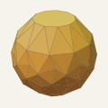

A pre-print by David Ryan. Draft 1, 2026‑10‑06.
This draft has not been peer-reviewed. The proof is computer-assisted. The new results of Sections 3 to 6 have passed numerical tests, but no one outside this project has checked them, and nothing here is formalised in Lean. Corrections are welcome.
A convex polyhedron is Rupert if a hole can be cut through it that lets a congruent copy pass. Steininger and Yurkevich constructed the Noperthedron, a 90-vertex polyhedron that is not Rupert, with rotation group C15 and point symmetry. We construct a second solid of this kind, the Undecanope. It has 88 vertices, rotation group C11 and point symmetry, and we prove that it is not Rupert. Near poses where the two shadows coincide, the published method needs three shadow vertices with a radial property. The Undecanope has a band of views where no such triple exists. We prove a local theorem that uses every shadow vertex with both of its edge normals instead. It has a first-order form and a second-order form, and both have exact rational versions. An exact replay of a cover of the pose space by 3.4 million boxes completes the proof. We also show that a negative first-order depth at a generic view makes a point-symmetric solid locally Rupert.
Each draft keeps its own address, and the newest is listed first. drbuild.uk/papers/undecanope.pdf always holds the newest draft.
| Draft | Date | Changes |
|---|---|---|
| Draft 1 | 2026‑10‑06 | First version |
AI models did most of the computation and mathematics under my direction. The work started in OpenAI's Codex with GPT-5.6 Sol, whose search found the Undecanope's coordinates. It finished in Anthropic's Claude Code with Claude Opus 5.5, which proved the new local theorems, built the certificate and drafted the paper. The acknowledgements give the full split.